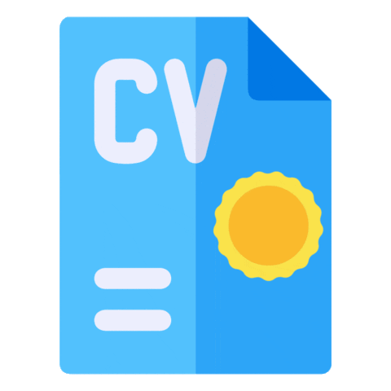

Raphael Lins
Desenvolvedor Júnior
-

- 
Sobre
💻 - Atualmente estou cursando a faculdade de ciências da computação.
🐍 - Estou experimentando codar com C, C#, HTML, CSS, JS, PHP, Python.
🔗 - "Indivíduo motivado e entusiasta buscando oportunidades profissionais para adquirir
experiência sólida em desenvolvimento de backend e gamedev. Determinado a contribuir ativamente em
projetos desafiadores, com habilidades técnicas em constante aprimoramento e prontidão para enfrentar
novos desafios no mundo da tecnologia e dos jogos."
Brasília, DF